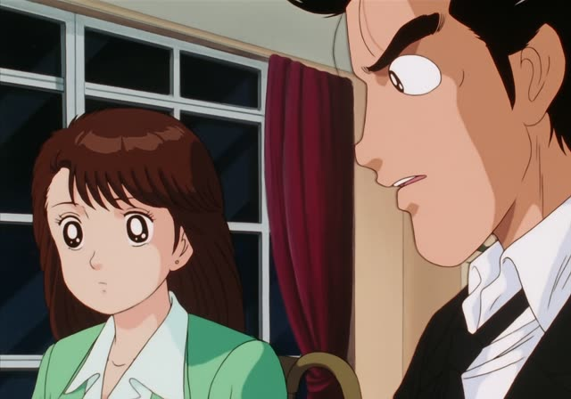
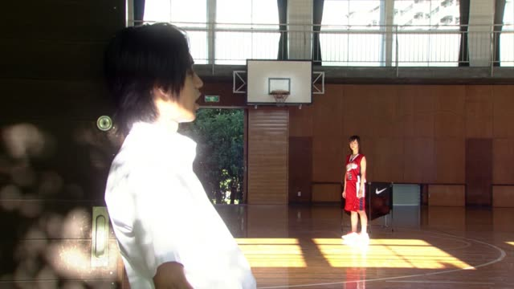
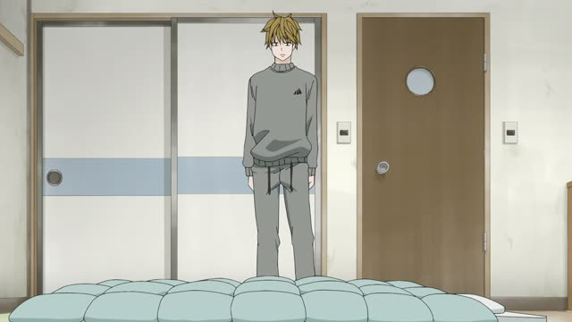

やる (Give)
Kekkon Dekinai Otoko · Episode 8
エサやって、散歩させるだけですから。
"You just feed him and walk him."
やる means "give", but only downward: to animals, plants, or people younger or below you. エサをやる (feed), 水をやる (water plants).
On this card, Kuwano explains looking after the dog: just give it food and walk it. ですから makes it polite.
～てやる is the same downward giving for actions: "I'll do it for you" (a bit rough), or "I'll show you!".
Tekkonkinkreet
毎日水やってるのに。
"Even though I water it every day."
On this card, Shiro wonders why his seed isn't sprouting. 水をやる: water a plant.
Quick Examples
Your kid asks about the cat.
猫にエサをやった？
"Did you feed the cat?"
CasualA neighbor's garden.
毎朝花に水をやります。
"I water the flowers every morning."
PoliteYour little brother needs help.
宿題、手伝ってやるよ。
"I'll help you with your homework."
てやる: doing something for someone below.
CasualA rival in a game.
絶対勝ってやる！
"I'm going to win, just watch!"
てやる: "I'll show you".
CasualWith and without
弟にお菓子をあげた。
"I gave my brother some sweets." Neutral.
弟にお菓子をやった。
"I gave my brother some sweets." Clearly from above.
Examples from Media

Oishinbo · Episode 49
ですから、できるかぎり水をやりません。
"So we water them as little as possible."
About growing sweet tomatoes.

1 Litre of Tears · Episode 5
カメの餌やり。
"Feeding the turtles."
餌やり: the noun form, "feeding".
Vinland Saga · Episode 17
手伝ってやるからさ。
"I'll help you out."
Samurai Champloo · Episode 1
指折り数えて待っててやるよ。
"I'll wait, counting on my fingers."
Mugen, taunting.
Death Note · Episode 1
世の中を変えてやる！
"I'll change the world!"
てやる: "I'll show them".

Kotaro Lives Alone · Episode 2
ちょい寄せて寝てやるか。
"Guess I'll scoot over and let him sleep here."
Slam Dunk · Episode 51
１０番、俺がマークしてやる。
"Number 10, I'll mark you."
Oishinbo · Episode 12
この俺がたたき出してやる！
"I'll throw them out myself!"